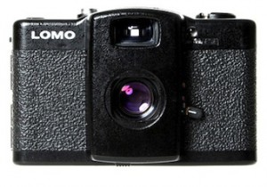

Lomography
sevgili prenses, 
dedim ki cebine bir lomo koysak, sarayının her yerini çekip bize göndersen, nasıl olur?
ben oldum olası tam olmayan, hatalı, çirkin, birilerine rahatsızlık verebilecek işleri sevdim. orasında burasında kusur olan, yarım kalan, genel estetik kurallarına uymayan işleri.. lomo bunu isteyerek yapmak için harika bir fırsat. eline aldığında bırakmak istemeyeceğin seni sokağa çıkmak için zorlayacak eskilerden kalma bir fotoğraf makinası. bir çeşit alt-kültür aslında. fotoğraf makinelerinin converse’i bile diyebiliriz belki. hafif, ucuz(?!), basit ve kullanışlı.
lomo ilk olarak rusya’da ajanların kullanması için üretilmiş. küçük olması, hafif olması ve pratikliği nedeniyle sokakta, yolda olan insana hitap etmeye başlamış bir süre sonra. 80lerde prag’a tatile giden üç gençten bir tanesi ikinci el bir dükkanda lomo compact automat (lc-a) bulmuş. seyahatinin tüm anlarını bu makina ile kaydetmiş ve negatifi bastırdığında ortaya çıkanlardan çok etkilenmiş. renkler, açılar derken makina kulaktan kulağa bir şekilde yayılmaya başlamış. gencin çektiği fotoğrafların diğerlerinden farklı olmasının sebebi lc-a’nın üstündeki 32mm.lik merceğin yapısı.. mercek üretim şekli sayesinde görüntüde bozulmalara, renklerde sapmalara ve aslında bir çok kişiye “hata” gibi gelebilecek kareler çıkmasına sebep oluyor.
lomo’nun tüm derdi de aslında bu. kuralsız bir fotoğraf çekme anlayışı. yamuk kareler, sarı gökyüzleri, mavi insan suratları, kadrajdan çıkmış objeler, fazla boş alanlar, bulanıklıklar vs.. bir fotoğraf kursuna gitsen öğreneceğin herşeyin tam tersi yani. lomo bunun için kendisine 10 altın kural belirlemiş: (kuralsızlık derken, kendisine kural mı belirlemiş?)
1. kameranı gittiğin yer yere götür.
2. her an kullan, gece ya da gündüz.
3. hayatının bir parçası haline getir.
4. mümkün olduğunca bel hizasından çekim yap.
5. objelere mümkün olduğunca yaklaş.
6. düşünme.
7. hızlı ol.
8. çekerken neyin fotoğrafını çekiyor olduğunu bilmek zorunda değilsin.
9. sonrasında da neyin fotoğrafını çekmiş olduğunu bilmek zorunda değilsin.
10. hiçbir kuralı umursama!
şu bel hizasından fotoğraf çekme hadisesine değinmek istiyorum biraz. yaklaşık 9 senedir fotoğraf çekmeye çalışan birisi olarak elime lomoyu aldığımda kimi şeyleri çok otomatik yaptığımı farkettim. herşeyden önce bir lomoda makinayı gözünüze götürsen dahi çekeceğin karenin ne olacağını ya da neye yakın olacağını bilemezsin. çünkü mercekte illaki bir gariplik vardır ve bu vizöre yansımaz. yani ister bir kareyi 4’e bölen makinalardan, ister balık gözü, istersen de renkleri patlatan lomo’dan al, vizör hiçbir işine yaramaz. aslında biraz da bu yüzden bel hizasından çekim yapmak mantıklı. henüz 1. filmimi bitirmek üzereyken 32 pozdur denklanşöre basmadan önce makinayı gözüme götürmemeyi öğretemedim kendime. öğrenilmesi gereken birşey olduğundan değil, bu makinayla buna gerek olmadığından. kurallardan biri olan “hızlı ol”‘u da yapamıyorsun böylece, hızlı olmak bir yandan doğaçlama imkanını da arttırıyor çünkü. neyse zamanla alışıcağımı biliyorum.
lomoyla ilgili bir diğer şey de filmleri ve banyosu. herşeyden önce lomo negatif film kullanıyor. yani şimdiki çoğu makinanın olduğu gibi dijital değil, banyo yaptırman gereken filmlerden. çektiğin fotoğrafı hemen görememek, denklanşöre her bastığında merak etmek en azından kendi adıma özlemiş olduğum bir hismiş. makinayı dükkandan alıp eve geldiğimde hemen kullanmak için film takmam gerekliydi ve negatifi elime alınca ne kadar uzun zamandır analog bir makinaya film takmadığımı farkettim. biraz tırsarak (ya filmi doğru takamazsam da çektiğim herşey çöp olur diyerek) tedirgin ellerle filmi taktım. 6-7 poz çektikten sonra kullanma kılavuzundaki bir ibareden filmi yanlış taktığımı anlayıp ilk ruloyu çöp ettim..
gelelim filmlerine ve banyosuna. lomo’da normal/bildiğimiz negatif filmi kullanabilirsin. hatta mümkünse fotoğrafçıya gidip bayat filmlerden alman daha mantıklı olur. hem çok daha ucuz olurlar hem de bir nevi geri dönüşüm. ayrıca lomo’da pozitif yani dia filmleri de kullanabilirsin. burda cross processing denilen çapraz banyo tekniğine geliyoruz. aldığın dia filmi (yani pozitif filmi) normal bildiğimiz negatif filmin kimyasallarıyla banyo ettirirsen lomo’ndan daha eğlenceli sonuçlar alabilirsin. bir nevi hatalı yıkama.. (ufak bir ipucu: dia filmini normal negatif filmin banyosuyla yıkatırsan renkleri daha parlak/doygun kareler elde edersin.)
 şimdi biraz da lomo’nun çeşitlerine bakalım. aslında temelde benzer mantığa dayalı bir çok lomo tipi var.
şimdi biraz da lomo’nun çeşitlerine bakalım. aslında temelde benzer mantığa dayalı bir çok lomo tipi var.
yazının başında bahsettiğim lc-a modeli en eski model olması sebebiyle kendi sitelerinde bile 250 euro gibi çok çok bir paraya satılıyor.
diğer modeller genellikle 40 ile 90 euro arasında oynuyor. diana, holga, balıkgözü (fisheye), çoklu lens, renk patlatan gibi temel seçenekler var. makinana aksesuar ekledikçe fiyatın artabilir. temelde basit bir makina olduğu için eklenen flaş, uzun pozlama gibi özellikler fiyatta değişiklikler yapıyor ne yazık ki. türkiye’de nerelerden alınır pek bilmiyorum, muhtemelen sirkeci’deki hayyam pasajına gitsen bulabilirsin ya da internetten sipariş vermek de mantıklı olabilir veya yurtdışına çıkan bir arkadaşından isteyebilirsin. genelde dükkanlar kendi fiyatlarını belirledikleri için türkiyeden alırken dikkat etmek lazım. kimilerine göre çok moda/trendy birşey olduğu için normalden fazla para vermek pek akıllıca olmayabilir. ne kadar çok fotoğraf o kadar baskı parası evet ama dediğim gibi bayat film alarak belki bu maliyeti biraz azaltabilirsin. hatta ve hatta kendisi de lomo kullanan bir fotoğrafçı bulursan baskı aşamasında pek de eğlenebilirsin.
lomonu aldıktan sonra flaşının önüne renkli jelatinler yapıştırarak, objektifin önüne büyüteç tutarak, kafanın üstüne yerleştirip zıplayarak ve daha hayal edebileceğin kadar çok yöntemle fotoğraf çekebilirsin. bunları herhangi bir makinayla da yapabilirsin elbet ama dijital olmayan, “beğenmedim sileyim” opsiyonun hemen o anda bulunmayan bir aletle yapmak işin keyifli yanı. tabii bir de tüm bunları dslr makinayla çektiğin fotoğraflara photoshop ya da herhangi bir fotoğraf editleyebileceğin bir programla yapmak da var.
evet bunlar lomo’yla yapabileceklerin. aslında uyduruk, hafif ve çıt desen kırılacak gibi duran bir fotoğraf makinası için neden bu kadar yazı devirdim.. lomo kendi içinde bir sosyal kültür, fotoğraf çekmek de öyle. çektiklerini internette galonla bulabileceğin paylaşım sitelerine koymak, yorum almak yapmak bunların hepsi lomonun içinde de var (bu arada çok popüler bir fotoğraf paylaşım sitesinde üye olucam diye çektiklerimi bir ben biliyorum, yok yorum yap, şu kadar puan topla, şu sayıda foto yükle de anca öyle alırız seni gibi). lomo bir tarafıyla pazarlama harikası. gidip sovyetlere “sizin makinanızı birileri baştacı etti” desen bir zamanlar kıçlarıyla gülerlerdi belki. birçok ülkede üzerine seminerler, toplaşmalar ve organizasyonlar, sergiler, yarışmalar yapılan lomo sana kendini bir altkültüre aitmişsin gibi hissettirmek için kendisine bir sebep yaratmış da olabilir.
lomonun keyfi sürprizli olmasında bana göre. aklını başka bir şekilde kullanmana vesile olması, alışkanlıklarını anlık da olsa kenara koydurtması.


{kind=link}
{kind=link}
{kind=link}
Yazı için çok teşekkürler. Tam zamanında geldi.
Bir hafta önce bir arkadaşımda denedim Diana F diye bir modeli. Fotoğraf çekerken makinadan çıkan sese vuruldum ve zıplamaya başladım. Sonra onun çektiği fotoğraflara baktık. Gerçekten kusurlu ve şahane fotoğraflar çıkıyor lomo’yla. Velhasıl birkaç gündür deli gibi hangi modeli alsam ne yapsam diye araştırıyorum. Sizin bir öneriniz var mı???
merhabalar, ben kendime balıkgözü bir lomo aldım geçenlerde. şimdilik keşfetme aşamasında sayılırım. önce 400 asa filmle denedim, sonuçlar pek bir grenli oldu. şimdi 200 asa aldım, bakalım bunda neler olacak. eskiden actionsampler denilen modelden vardı. bir kareyi 4’e bölenlerden. o da çok keyiflidir. kendin hareket ederken veya sana doğru gelen bir objeyi çekersen 4 karede de farklı sonuçlar alabilirsin.
lomonun kendi sayfasına bakabilirsin, orda hangi makina nasıl çekimler yapıyor görebilirsin. http://www.lomography.com/photos fakat korkunç yavaş bir sayfa, açılması, içinde dolaşması pek yorucu olabilir. google’a yazıp görsellerden çıkan sonuçlar daha verimli olur muhtemelen.
diana için de http://microsites.lomography.com/diana/ sayfasına bakabilirsin.
Cok tesekkur ediyorum bilgiler icin. Lomography.com’da epeyce bi dolastim, haklisiniz cok yavas:/ Muhtemelen Diana F+ alacagim ben de. Malum makinayi elimde tuttum sevdim. Gonderdiginiz ikinci link de dolayisiyla cok isime yaradi. Cok sagolun:)
merhaba, acaba cross process yaptırmadan alınan sonuçlar hakkında bilgisi olan var mı? normal fotoğraflardan bir farkı oluyor mu yani gene bir lomo havası oluyor mu acaba crossuz…?
ben de istiyorum bu makinelerden ! internette ürünü inceledim ve aman tanrım ! aşık oldum. lomoları nerden bulabilirim turkiyede. 4 lenslilerden istiyorum. siz internetten mi aldınız ?
sinem, crossprocess’i illa ki yapmak zorunda değilsin. işi değişik kılmak için yöntemlerden biri o sadece. alacağın malkina zaten illa ki bir şekilde fotolarda bozulma yapıyor olacak.
çisil, ben yurtdışından almıştım ama gittigidiyorda var makinalardan. hatta dur linkini veriyim. http://arama.gittigidiyor.com/lomo_W0QQklmZZlomoQQsyfZZ2 üye olmadan fiyatları görünmüyo, o yüzden bi fikrim yok. 4 lensli olan benim ilk makinamdı. eğer alırsan mümkün olduğu kadar hareketliyken çekmeye çalış. ya sen hareket et ya da çektiğin obje hareket etsin, o zaman daha keyifli sonuçlar çıkar.
selam, ben de geçen hafta fisheye lomo aldım internetten. 4 dia bitirdim, sonuçları görmek icin sabırsızlanıyorum. ancak internette dia banyosu yapan yerleri araştırdım, bir kac tane telefon numarasını aradım. malesef dia banyosunun artık yapılmadıgını söylediler. hatta bu konuda tavsiye edilen ve işini iyi yaptıgı söylenen Enis Akcam diye bir adama ulaştım, O’da artık yapmadığını söyledi, hatta Sirkeci’de bu işi yapan kimsenin kalmadığını söyledi. Bildiğim eski bir yer var, Diagonal.. burası da fiyat konsunda biraz uçuk ayrıca sadece haftanın üç günü dia taraması yaptıklarını söylediler. Diagonal dışında başka şansım var mıdır ? siz nerde yaptırıyorsunuz banyolarınızı? bir öneriniz var mıdır, yardımcı olursanız, çok sevinirim..
ben de geçen hafta Holga k200n aldım. http://www.lomonomo.com sitesinde kampanyalar var, orayı hepinize tavsiye ederim.
Sirkeci’de Kristal Fotoğrafçılık’ta Cross Process yapılıyor. Gün sınırı falan da yok. 1 saat içinde yapıp veriyorlar. Dialarınızı verirken C41’de banyo ettirmek istediğinizi söylemeniz yeterli. Internette arayıp adres ve telefonlarını bulabilirsiniz.
http://www.lomonomo.com
analog lomo fotografçılık
Analog Fotografcilik, Fotograflar, Lomo, Diana, Holga, Film, 35 mm Film, 120 mm Film, Lomo LC-A, Diana F+, Lomo Turkiye, Lomo Turkey, Diana Pink, Action sampler, Super Sampler, Diana Mini, Diana 35 mm Back, Diana Flash
Lomo akımına genel bir bakış…
Düşünme, sadece çek felsefesine dayanan bu akımın geçmişi çok eskilere dayanmasa da son yıllarda popülerliğini oldukça arttırmıştır. İçlerinde fotoğraf sanatçılarından amatörlere kadar uzanan milyonlarca insan için ise tam bir tutku haline gelmiştir.
Lomo başlangıçta underground bir hareketken, şimdilerde küresel anlamda sosyo-kültürel bir nitelik kazanmış durumda. Dünyanın dört bir yanında adına etkinlikler düzenlenen, bloglar hazırlanan bu felsefeyi, Lomonomo Türkiye’de bir marka haline getirmiştir.
Lomo’yu bu denli çekici kılan, düşük teknoloji ile yüksek teknolojiyi eğlenceli bir şekilde bir araya getirmesi aslında. Lomo’da kadraja gerek duyulmaz ve Lomo, fotoğraf tekniğini önemsizleştirerek spontane, renkli, otantik, sıra dışı kareler elde etmenizi sağlar. Bazı modellerinde, birden fazla lens kullanılarak gökkuşağı renkli flashlar elde edilebilirken, filmi sarmadan üst üste çekilen fotoğraflarla çılgın kareler elde etmek de mümkün.
Yani…. Lomo’da beklenti yok. “bunu neden çektin”, “renkleri karışmış”, “modelin yüzü seçilememiş”, “keşke şu bina burada olsaydı” gibi sorulara da yer yok. Yani… Kurallara takılmak yok. Düşünme, sadece çek!
Lomo modelleri
Holga: Seni dijital piksellerden ya da küçük ekranlarda paylaşılan görüntülerden kurtarmak için üretilen bu makine, vizyonunu içinde bulunduğu uykudan uyandıracak. Tamamen plastikten üretilen Holga’nın doğayı koruduğunu bilmek, tıpkı bulutlu bir günde açan güneş gibi, ya da yağmurun ardından çıkan bir gökkuşağı gibi karelerini canlandıracak!
Diana F+
Diana F+: Bırak herşey kontrolünden çıksın! Sadece içindeki yaratıcı güce konsantre ol ve o anın hikayesini anlatmayı düşün, gerisi boş. Bulanık haliyle ve rüya gibi tonlarıyla Diana ile çektiğin anları, gerçek halinden daha çok seveceksin. Her çektiğinde, beklenmedik ama bir eşi daha olmayan kareler elde etmek sana gerçekten keyif verecek.
Lomo LC-A: İşte en popüleri. Bu akıma adını veren serinin yegane temsilcisi. Onunla çekilen kareleri aksesuarlarıyla şenlendiren Lomocular, Lomo LC-A’den asla vazgeçemezler!
Horizon: Panaromikçilerin ilk tercihi. Çapın tamamını kullandırdığı için ve shutter özelliklerinden dolayı, fotoğrafçıya yaratıcılıkta maksimum esneklik sağlar. Bir saatin mekanizması kadar sessiz kullanımı sayesinde, müze, tören gibi hassas alanlarda kullanımı oldukça rahattır ve bu durum pillere olan ihtiyacını neredeyse sıfırlar. Tamamen manuel ayarları ile işler çok kolay!
Oktomat: Bazen 1 yeterli değildir. Hatta 2, 3 ya da 4. Zamanı ölümsüzleştirmek, bir fotoğrafla birçok şeyi aynı anda söylemek istersin. İşte o zaman Oktomat imdadına yetişir. Kareyi sekiz eşit parçaya bölen bu kamera sayesinde, her bir parçası farklı şeyler söyleyen fotoğraflar çekmek gerçekten harika!
Supersampler ve Actionsampler modelleri ile dört farklı kareyi bir fotoğrafa sığdırmak da mümkün!
Colorsplash: Etrafı yeniden renklendirmeye hazır ol! Colorsplash ile gökyüzü kırmızı ya da yeşil olabilir, ya da toprak masmavi. Kural yok! Kendi dünyanı yarat!
Zenit: O tam bir profesyonel! Ayarlarla uğraşan, zoru sevenler için biçilmiş kaftan. Her yerde, her mekanda harika deneyimler yaşayabilirsin. Uzun yıllar geçse de değerini asla kaybetmeyen Zenit, her analog fotoğrafçının koleksiyonunda mutlaka bulunmalı.
lomo4 lens almayı düşünüyorum fiyatı uygun olmasıda almamı kolaylaştırıcak tabiki, sorum 4 lenslerde her pozu 4 karede çekme zorunluluğu varmı, yaniistenirse, ayarlanırsa tek karede çekilebiliyormu??
ne yazık ki çekilemiyor. bu arada 4 kare derken filminizden 4 kare harcıyor gibi düşünülmesin (ne me lazım:), 1 kareye 4 hareket sığdırıyor.
üstüste çekim özelliği olan ve flaşı olan bir lomo olsun istiyorum yardım edin:)
ecem, ben de sadece normal bir lomo kullanıcısıyım. elimden geldiği kadar sorulara yardımcı olmaya çalışıyorum ama sanırım bu konuda olamıycam. 🙂
fakat şunu söyleyebilirim ki türkiye’de de son zamanlarda bu konuda satış yapan siteler artmaya başladı. onları ararsan yönlendirirler seni sanıyorum.
Merhabalar,
lomography.com’dan alışveriş yapan var mı? Ürün ve kargo ücreti dışında herhangi bir vergilendirme,gümrük vs. ödeniyor mu? Bilgisi olan cevaplarsa çok sevinirim.
selamlar. lomography.com’dan hiç alışveriş yapmadım ama şöyle bir bilgi mevcut:
Önemli Değeri Olmayan Eşya Posta veya hızlı kargo yoluyla gelen eşya
MADDE 45- (1) Türkiye Gümrük Bölgesindeki bir kişiye posta ya da hızlı kargo taşımacılığı yoluyla gelen, gümrük kıymeti gönderim başına toplam 150 Avro’yu geçmeyen, ticari miktar ve mahiyette olmayan eşyaya muafiyet tanınır.
yani 150 avroya kadar yaptığınız alışverişlerde gümrük vergisi olmayacaktır. sitede yazan fiyatın üsütne bir de shipping parası eklenince başka masraf çıkmaması lazım.